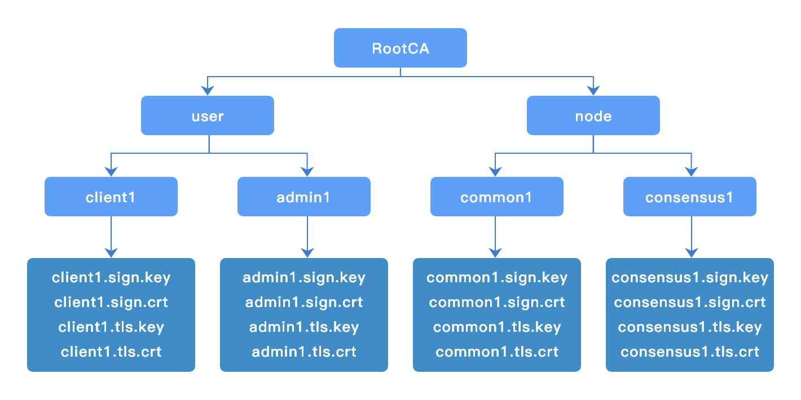

4. 证书生成工具¶
4.1. 概述¶
chainmaker-cryptogen是长安链基于证书配置模板文件生成ChainMaker节点和客户端证书的工具。
4.2. 证书配置模板¶
crypto_config:
- domain: chainmaker.org
host_name: wx-org
# 组织数量，如果为1，直接使用host_name，否则添加递增编号
count: 4
#pk_algo: ecc_p256
pk_algo: sm2
ski_hash: sha256
specs: &specs_ref
expire_year: 10
sans:
- chainmaker.org
- localhost
- 127.0.0.1
location: &location_ref
country: CN
locality: Beijing
province: Beijing
# CA证书配置
ca:
location:
<<: *location_ref
specs:
<<: *specs_ref
# 节点证书配置
node:
- type: consensus
# 共识节点数量
count: 1
# 共识节点配置
location:
<<: *location_ref
specs:
<<: *specs_ref
expire_year: 5
- type: common
# 普通节点数量
count: 1
# 普通节点配置
location:
<<: *location_ref
specs:
<<: *specs_ref
expire_year: 5
user:
- type: admin
# 管理员证书数量
count: 1
# 管理员证书配置
location:
<<: *location_ref
expire_year: 5
- type: client
# 普通用户证书数量
count: 1
# 普通用户证书配置
location:
<<: *location_ref
expire_year: 5
4.3. 使用方法¶
4.3.1. 支持命令¶
$ ./chainmaker-cryptogen -h
Usage:
chainmaker-cryptogen [command]
Available Commands:
extend Extend existing network
generate Generate key material
help Help about any command
showconfig Show config
Flags:
-c, --config string specify config file path (default "../config/crypto_config_template.yml")
-h, --help help for chainmaker-cryptogen
Use "chainmaker-cryptogen [command] --help" for more information about a command.
| 命令 | 用途 |
|---|---|
| generate | 批量生成节点和用户证书 |
| extend | 扩展节点和用户证书，即保持组织已签发证书不变，签发新的证书 |
| showconfig | 展示配置模板内容 |
4.3.2. 生成证书¶
$ ./chainmaker-cryptogen generate
$ tree -L 3 crypto-config/
crypto-config/
├── wx-org1.chainmaker.org
│ ├── ca
│ │ ├── ca.crt
│ │ └── ca.key
│ ├── node
│ │ ├── common1
│ │ └── consensus1
│ └── user
│ ├── admin1
│ └── client1
├── wx-org2.chainmaker.org
│ ├── ca
│ │ ├── ca.crt
│ │ └── ca.key
│ ├── node
│ │ ├── common1
│ │ └── consensus1
│ └── user
│ ├── admin1
│ └── client1
├── wx-org3.chainmaker.org
│ ├── ca
│ │ ├── ca.crt
│ │ └── ca.key
│ ├── node
│ │ ├── common1
│ │ └── consensus1
│ └── user
│ ├── admin1
│ └── client1
└── wx-org4.chainmaker.org
├── ca
│ ├── ca.crt
│ └── ca.key
├── node
│ ├── common1
│ └── consensus1
└── user
├── admin1
└── client1
4.3.3. 证书目录结构¶
$ tree crypto-config/wx-org1.chainmaker.org/
crypto-config/wx-org1.chainmaker.org/
├── ca
│ ├── ca.crt
│ └── ca.key
├── node
│ ├── common1
│ │ ├── common1.nodeid
│ │ ├── common1.sign.crt
│ │ ├── common1.sign.key
│ │ ├── common1.tls.crt
│ │ └── common1.tls.key
│ └── consensus1
│ ├── consensus1.nodeid
│ ├── consensus1.sign.crt
│ ├── consensus1.sign.key
│ ├── consensus1.tls.crt
│ └── consensus1.tls.key
└── user
├── admin1
│ ├── admin1.sign.crt
│ ├── admin1.sign.key
│ ├── admin1.tls.crt
│ └── admin1.tls.key
└── client1
├── client1.sign.crt
├── client1.sign.key
├── client1.tls.crt
└── client1.tls.key
4.3.4. 扩展证书¶
例如需要增加1个共识节点，即修改配置模板中的如下配置：
node:
- type: consensus
# 共识节点数量
count: 1
修改为：
node:
- type: consensus
# 共识节点数量
count: 2
执行extend命令，完成共识节点证书增加1个：
$ ./chainmaker-cryptogen extend